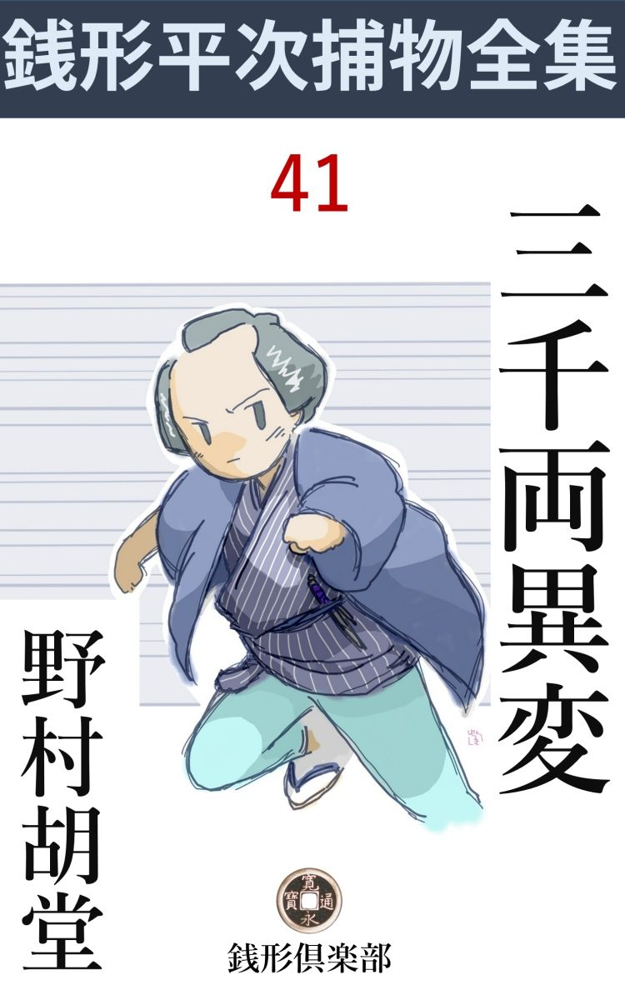
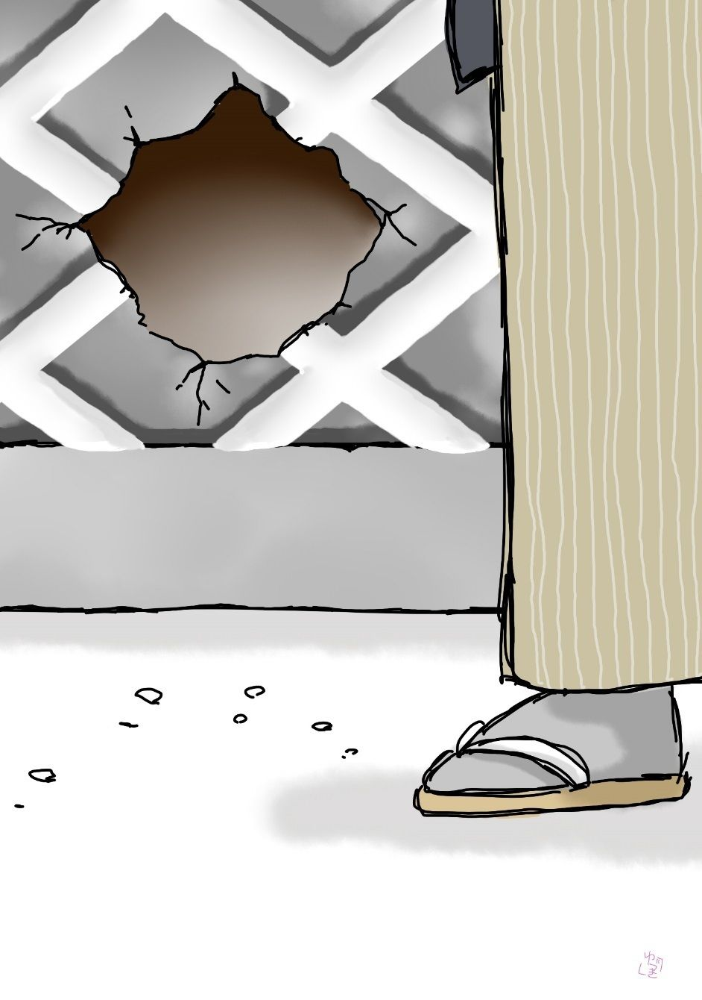

| 三千両異変: 銭形平次捕物全集第41話 (銭形倶楽部) | |
| 野村胡堂 | |
| ZENIGATA CLUB (2018) | |

一
「おや、八五郎親分、もう御存じで」
「知らなくってさ。隠したって駄目だよ、真っすぐに申し上げた方がいいぜ」
ガラッ八の八五郎が、浜町河岸 で逢ったのは、廻船問屋浪花 屋 の奉公人、二三本釘の足りない江戸っ子で、雑用にコキ使われている釜 吉 でした。
五月二十八日の川開きが昨夜済んだばかり、朝の浜町河岸は埃 溜 を引っくり返したようですが、その中に何かしら事件の匂いを嗅 ぐともなく、人の顔ばかりを見て歩いて来た八五郎だったのです。
「恐れ入ったネ、八五郎親分、あれを御存じとは」
何の事やら判りませんが、素人 衆 が岡っ引を買い被 るのがこっちの付け目で、八五郎はこんな相手から、事件の端 緒 を引出すことにかけては、親分の銭形平次に、毎々舌を巻かせるほどの名人だったのです。
「それはね、餅は餅屋だ。どんな事でも、一刻 と経たないうちに、俺達の耳に入るから不思議さ」
八五郎がこんな時ほど賢こそうに見えることはありません。毛 虫 眉 を顰 めて、大きい口を屹 と結ぶと不思議なことに、長んがい顔も、少しばかり寸が詰ります。
「あの土蔵の穴を見付けたのは、ほんの半刻前ですぜ、親分」
「そうとも」
「あの辺はお隣の物置の裏で、容易 に人の行くところではなし、足跡でもなきゃア、気の付く場所じゃありません」
「そうだってね」
「もっとも、よく気を付けて見ると、庭の方まで少し漆 喰 がこぼれていましたよ」
「それが天罰 と言うものだよ。娘師 が漆喰をこぼしたり、鋸 を忘れたりするようじゃ」
「鋸は物置から出して使ったんだ、親分」
八五郎は到頭、釜吉の口吻 から、昨夜浪花屋の土蔵が、娘師に見舞われたことを嗅ぎ付けてしまったのです。
「それは物の譬 だ。------ところで盗 られたのは？」
「それが不思議で、何を面喰らったか、泥棒の拵 えた穴が、人間が入るにしちゃ、少し小さ過ぎましたよ」
「ハッハッ、ハッ、そいつは大笑いだ」
「へッへッ、全く変な話じゃありませんか。------おや、お帰りで」
八五郎はそれっきり釜吉に背を見せて、柳原の方へ足を向けたのです。
「まア御免を蒙 ろう、自分の身体の入らない穴を拵える娘師なんかと付き合っちゃいられねえ」
「でも、旦那は大騒ぎですぜ、何しろあの土蔵の中には、明日の船で大阪の本店へ持って行く三千両の小判の外に、金が唸 るほどあるんで------」
「金持は心配が絶えないよ」
八五郎はすっかり興味を失いました。土蔵に小さい穴なんか拵える泥棒とかかり合っているにしては、五月二十九日の朝は、あまりに美しく晴れ渡っていたのです。
それから親分銭形平次の家まで、どんなに長閑 な心持で辿 ったことでしょう。
「親分、お早う」
「大層好い機嫌だなア、八、寝起きの良い子は育つよ」
平次は朝飯が済んだばかり、爽 かな陽の中に、盆 栽 の緑を楽しんでおりました。
「新堀の浪花屋の土蔵へ穴を明けた野郎がありますよ」
「そうかい、相変らず早い耳だ。盗られたのは？」
「それが可怪 しいんで、折角穴は拵えたが、あんまり小さくて、泥棒が入れなかったそうですよ。間抜けな話じゃありませんか」
八五郎は如何にも面白そうでした。
「それとも手先に子供か猿 を使っていたかな」
「えッ」
平次の観察 の鋭さ、ガラッ八もこう言われると、今更自分の迂 闊 さに気がつきます。
「そいつは面白そうだ。行って見ようか、八」
平次は立上がりました。
二
平次とガラッ八は、時を移 さず南新堀町の浪花屋へ飛んで行きました。豊海 橋を距 てて御船手屋敷と相対した、大きな廻船問屋で、主人の又左衛門は四十二三の年配、銭形平次が行くと、大喜びで迎えてくれます。
「これは、銭形の親分さん、御苦労様で、------釜 吉 の野郎が、つまらない事を子分衆の御耳に入れたそうで恐れ入りました。私共にしては、お願いして見て頂きたいところですが、盗られた物もないところを、お出でを願ってはどうかと、実は御遠慮申上げておりました」
下へも置かぬあしらいです。
「娘師 が身体の入らない穴を明けるなんて、滅多 にない事だ、------悪い手口が流行 らなきゃアいいが。ともかく、そこを見せて貰いましょうか」
「まだそのままにしてあります。小さくても穴を明けたのを放っても置けませんから、今左官 を呼びにやりましたが------」
主人の又左衛門はそんな事を言いながら、土蔵の裏へ案内してくれました。音に響いた廻船問屋で、土蔵は幾 戸 前もありますが、それは道を距 てた河岸縁の荷庫で、貴重品を入れる土蔵というのは、家の裏に大きいのが一と戸前だけ、その裏へ廻ると、隣りの物置とじめじめした路地を距てて、滅多に人の来るところではありません。
「おや、銭形の親分さん、お早う御座います」
泥棒の拵えた穴の前に踞 んで、頻 りと中を覗いているのは、先程八五郎に事件を教えてくれた下男の釜吉です。
平次は眉を顰 めました。悪気はなかったでしょうが、折角生 湿 りの土に残して置いた泥棒の足跡などは、滅茶滅茶に踏み荒しております。
「旦那、泥棒の足------って言いますが、随分大きいんですね。私のとあんまり違いませんよ」
僅かに残る足跡へ、釜吉は自分の足を持って行って重ねて見せるのでした。年配三十七八、深川生れを自慢にしている男ですが、荷揚 人足 から正直を見込まれて、浪花屋のお勝手向の小用を足し、時には飯も炊 けば、庭も掃 くといった調法者です。
「おや？ 泥棒の足跡へピタリと合うじゃないか」
八五郎は驚いて口を出しました。
「だから不思議なんで、まるで俺がやったようなものだ。もっとも俺がやるなら、この三層倍もでっかい穴をあける」
どうも少し調子が変です。

「昨夜 川開きに出掛けたのは何人でしょう」
平次は又左衛門のむずかしい顔を見やりました。商売にも道楽にも強いと言われた又左衛門は、町人らしくない線の太い男です。
「皆んな出かけましたよ。留守番は私と釜吉と、下女のお久 だけで、------そのかわり三人は家から一寸も出ません」
「その頃やられたんですね。お隣りが近いから、夜中じゃこんな荒仕事は出来ません。鋸 なんか、思いきった使いようですよ」
土蔵の海鼠 壁 を掘って、土台上を厳重に固めた、栗 の角材を鋸 ききった仕事は、宵の花火騒ぎにでも紛 れなければ出来ないことです。
が、折角切り開いた穴は入口で精々一尺四方、中は栗材に妨 げられて、大の男ではとても肩が入りません。
「鋸も鍬 も皆んな物置から出して使ってありますよ。憎いじゃありませんか」
又左衛門は穴の前に捨てられた鋸と鍬を指して、苦笑いしております。
「それにしちゃ、草鞋 をどこへやったろう」
「え？」
「大きな草鞋を突っかけて仕事をしたに違いない。足跡は大きいが、爪先と踵 が反 って柔 かい土へ舟形にめりこんでいるでしょう」
「成程」
平次の慧眼 に一番先に感心したのは、やはり又左衛門でした。
「釜吉さんとか言ったね。------お前さんの草鞋がなくなっちゃいないだろうか」
平次は釜吉を顧 みました。
「勘定したことはありませんが、私の草鞋は大きいから盗んでも役に立ちませんよ」
釜吉は一向無関心に、十二文半甲高 の足を出して見せるのでした。
「この様子じゃ大した事はありませんね、仕事は如何にも素 人 臭 いし」
平次はすっかり興味を失ったらしく引揚げます。
「親分、------この中には明日大阪へ積出す千両箱が三つ、外にいろいろ大切な品がありますが、どうしたものでしょう」
又左衛門は平次の冷淡 さが気に入らない様子でした。
「あっし には工夫がありません。旦那の気のすむようになすっちゃどうです」
「家へ持って来て、寝ず番でも付けようと思いますが------」
「------」
平次は点頭 いて見せました。三千両と言えばどんな大身代にしても容易ならぬ大金です。
「飛んだお骨折りで御座いました。お茶でもいれますから------」
又左衛門に案内されると、平次は遠慮する様子もなく浪花 屋 の奥へ通りました。
大番頭の佐兵衛は六十を越した老人で、忠実一点張りの男、本店からの付人で、謂 わば主人の又左衛門の後見役でもあったのです。
二番番頭の和助は三十二三の好い男、少し臆病 で柔和過ぎる嫌いはありますが、強 か者の又左衛門とは案外馬が合って、佐兵衛をそっち除けに、相談相手にもなり、遊びの付き合いもするといった人柄でした。
あとは丁稚 小僧ばかり、一季半季の奉公人で取立てて言うほどの人間ではありません。
又左衛門は三年前に本妻が死んで、子供のない淋しさを慰 めるために、長く外に囲 っていた妾のお妻を家へ入れました。これは二十七八の滴 るような美しい女です。
先妻の死んだ当座は、後添えを世話する親類もありましたが、お妻に遠慮するともなく、そんな話も絶 えて、今では祝言をしたわけではありませんが、浪花屋の世帯を結構きって廻すようになっております。
これはすべて、この後に起った大事件の後で、平次とガラッ八が調べ抜いたことですが、この日は一応引合せられて、お妻の抜群 な綺麗さと、商売人上がりらしい取 成 しの巧 さに感心しただけの事です。
三
「親分、た、大変」
翌る日の朝、------まだ薄暗い路地を鉄 砲 玉 のように飛んで、平次の家の格子を叩いたものがあります。
「どなた？」
土竈 の下を焚 きつけていたお静が、姐 さん冠りを取って顔を出します。
「浪花屋の釜吉で御座います。大変なことが起りました、親分さんにすぐお出でを願います」
「釜吉さんか、どうしたんだ」
あまりの騒ぎに、平次も寝起きの顔を出しました。
「番頭の和助さんが殺されましたよ」
「えッ」
今度は平次の方が驚きました。
「その上、三千両が消えてなくなったんで」
「一緒に行こう、ちょいと待ってくんな」
平次は顔を洗っただけ、飯も食わずに飛出して、道々釜吉から、いろいろの話を引出しました。が、釜吉は健康な胃 の腑 の持主で、三千両の夢も見ずに眠ったらしく、何を訊 いても一向要領を得ません。
浪花屋へ着いて見ると、上を下への騒ぎです。
「親分さん、大変なことになりました。和助も可哀想ですが、あの三千両を奪 られちゃ、浪花屋が立ち行きません。何とかして取り返す工夫はないものでしょうか」
朝のうちに出る船を一応は待たせて置いて、主人の又左衛門泣かぬばかりの頼みです。
「とにかく、奥の様子や、番頭さんの死骸を見せて貰いましょう」
平次は店から入って、土間を奥へ突き抜け、そこから、主人の部屋と、その隣りの千両箱を三つ置いたという部屋を見せて貰いました。
「ここで御座いますよ、親分さん」
店と奥の境 、丁度庭木戸を入った雨 落 のところに、番頭和助の死体が、菰 を被 せてありました。検屍が済むまで、そこから家の中へ運び入れるわけにも行かなかったのです。
「後ろから飛付いて、手拭で頸 を絞めたんだね------これじゃ声を立てるわけにも行かなかったろう」
怨 を呑んで死んだ和助の死体からは、たったそれだけの事しか解りません。
木戸は開いたまま、この辺はお天気続きでよく乾いているので、足跡は一つもありませんが、この木戸は思いの外厳重で、外からは開けた様子も見えなかったのです。
「曲者 は和助に木戸を開けさせて入ったようで御座います」
又左衛門が説明してくれるまでもなく、平次にはそれがよく解りました。木戸が内から開いて、番頭が絞殺 されているのですから、曲者は番頭の知っている者------どうかしたら、和助の手引で押込んだ者でなければなりません。
三千両の金を三つの千両箱に入れて、夜っぴて見張らせていたというのは、和助の死体のあるツイ前の部屋で、そこには老番頭の佐兵衛が、茫 然 と気抜けがしたように坐っておりました。
「親分さん、皆んな私の粗相 で御座いました。宵のうちは旦那様、亥刻 から丑刻 までは和助、その後は暁方 まで私が見張ることになっておりましたが、宵から腹痛を起して、何としても我慢がなりません。隣りの部屋にいる和助どんを起して、ほんの暫 く代って貰って、厠 へ行ったのは、かれこれ、寅刻 で御座いました。用を済まして、帰って見ると、和助どんは見えません。が、床の間の千両箱にも変りはないし、大方眠くなって隣室 に敷いた床の中へ潜 り込んだものと思い込み、------御苦労------と声だけ掛けて、そのまま夜を明かしてしまいました。明るくなってから気が付くと、雨戸の締りが外 してあって、外には和助どんが死んでいるじゃ御座いませんか------」
老実らしい佐兵衛の話で、前後の事情はよく解りますが、それにつけても、和助が曲者と共 謀 だったことは疑いを容 れません。多分和助に引入れられた曲者は三千両の小判を手に入れると、和助を殺して逃げてしまったのでしょう。
「和助の身持はどうでした」
平次はもうそこまで突っ込んで考えております。
「私の口から申しちゃ何ですが、あまり良い方じゃ御座いません。外の奉公人の示 しもありますし、チョイチョイ叱言を言ってやりましたが------現に『寿 』の女中とも------」
「ちょいと、旦那様」
不意に又左衛門の口を塞 ぐように、横合から声をかけた者があります。
「何だい、お妻」
「そんな事を仰しゃっては、死んだ和助が可哀想じゃ御座いませんか」
蒼い顔をしたお妻が、訴 えるように又左衛門を見上げているのでした。少し取乱した様子も、この女らしくないたしなみの悪さで、事件が何となく容易ならぬ深さを持っていることを、平次が感じないわけには行きませんでした。
「親分さん、その床の間の三つの千両箱が、今朝になって気が付いてみると、三つとも空 っぽになっているじゃありませんか」
「------」
平次は点頭 きました。又左衛門に説明されるまでもなく、釜吉の話や、いろいろの情勢で、その位のことは解っていたのです。
「それも箱を開いて、中から小判を抜いたんじゃ御座いません。丁寧 に空箱を持って来て、そっと入れ換 えたのは憎いじゃ御座いませんか」
佐兵衛もそれを言う時は、老実な顔に、サッと一 と刷 毛 憤 怒 が走ります。
「手数なことをしたものだ。夜の明けるまで人に気が付かれないようにするつもりだったろう」
平次は部屋の中へ入って、床の間に積んだ三つの千両箱を調べましたが、それは古びの付いた細長い箱で、金具 こそ厳重ですが、中は開けて見るまでもなく空っぽ、何の特徴 もない代 物 です。
「こんな箱は沢山あるでしょうな、こちらなんかには？」
「へエ、京、大阪へ折々金を送りますから、土蔵の中には十二三用意が御座います」
「目印 はありませんか」
「その時その時貼紙 をしますから、目印といっても御座いません。もっとも箱の隅には焼 印 が捺 してありますが、この箱は御覧の通り店名の焼印も削 り取ってあります。どこから持込んだか解りません」
「フーム」
平次も少し持て余し気味でした。煙の如く消えた三千両の行方が判れば、自然和助殺しの下 手 人 も知れるでしょうが、それが、容易に判りそうもないのです。
四
「親分、大変な事になりましたね」
ガラッ八はその時やっと顔を出しました。
「八、様子を聞いたか」
「へエ------、あの釜吉とすっかり仲が好くなりましたよ。あんな面白い男はありゃしません。訊かない事までみんな饒舌 ってしまいます」
「お前とは反 の合いそうな人間だ」
平次は苦笑いしました。長んがい顔と、抜群 のノッポと、出来の悪い神田っ子と、日当りのよくない深川っ子と、江戸の人間にもこんなのがあると思うだけでも、ひどくたのしくなります。
「笑ったもんじゃありませんよ。大きい声では言われないが、------例 えば、殺された和助と、お妾のお妻とは飛んだ好い仲だったなんて事は------」
「シッ、小さい声で物を言え」
平次もそれは察しておりました。主人の又左衛門が、死んだ和助の非難めかしい口吻 を漏 らした時の、お妻の剣幕というものはなかったのです。
「親分は気が付いていなさるんで------」
「そんな事はどうでもいい、三千両の行方 を捜すんだ」
「へエ------」
「三千両といやあ大金だ。持ってみた事はねえが、一両四匁ずつとして、風袋抜きでも十二貫、生 優 しい人間じゃ持運びの出来る荷物じゃねえ」
「成程」
平次とガラッ八は、その辺中を捜し廻りました。物置も、縁の下も、埃溜 の中も------。
「井戸の水が急に濁 るような事はないか、お勝手で訊いてくれ」
「心得た」
ガラッ八は飛んで行きました。その後へ、
「親分、上下 の雪隠 を掻き廻しましたが、臭えの臭くねえの」
釜吉がフラリと現われて、そんな事を言っております。
「そんな馬鹿なことをする泥棒があるものか、後で持運びのならねえ場所へ小判を隠すわけはねえ」
平次もこれには少し驚いた様子です。
井戸にも何の異状もなく、屋根の上の天 水 桶 の中まで見ましたが、三千両は愚 か、たった三両の小判もありません。
捜索 の手はそこから往来を隔 てた荷物庫の方まで伸ばされました。主人の又左衛門始め、丁稚小僧まで加 わって、大地を掘らぬばかりに捜し抜きましたが、三千両は遠く持去られたものか、浪花屋の居廻りには、片 らも見えなかったのです。
そのうちに、船を出す刻限は過ぎて、荷主から大文句がやって来ます。
本店へは詫状 を出して、三千両は次の便船まで待って貰うことに決め、ともかくも一段落を付けたのは辰刻 過ぎ、川一つ距 てた組屋敷から、わざわざ同心の出役があって、検屍を済ませたのは辰刻 半 、浪花屋の内外は煮えくり返るような騒ぎです。
「番頭さん、土蔵の中を見せて貰えませんか」
昼近くなってから、平次は妙なことを言い出しました。
「土蔵はあれっきり開けませんが------」
佐兵衛は変な顔をしましたが、平次の思い込んだ様子を見ると、鍵 をガチャガチャさせながら、後に跟 いて行きます。
土蔵の穴は昨日のうちに修復 して、ちょいと見は何の変化もありません。
中へ入ってみると、さすがに大店 で、道具類は足の踏み場所もないほど用意してありますが、平次の注意を惹 くほどの物はなかった様子です。
「あれは？ 番頭さん」
「銭箱で御座いますよ。千両箱と申したところで、御用金でもなければ、金千両と書いた、酉 の市 の熊手へブラ下げるような箱へ入れるわけじゃ御座いません」
「中には何が入っているんだえ」
「十二三ありますが、大抵は空っぽです。三つ四つガラクタの入ったのがあるでしょう。何しろ三千両入ったのは家へ持って行きましたから、どこにも何んにもありゃしません」
平次は佐兵衛の説明を聞きながら、積んだ銭箱を動かして見たりしていました。古びの付いた細長い箱で、重いのも軽いのもありますが、上の三つ四つを除 けば、埃 が一パイ付いて、どうすることも出来ません。
「泥 の付いたのがあるね、番頭さん」
「大阪へ現金 を送る時、上のはよく使いますよ。何かの拍子 に泥の上へ置いたんでしょう」
「成程そんな事もあるだろう。が、番頭さん、数は減 っちゃいませんか」
「飛んでもない、親分」
佐兵衛は事もなげです。
五
「親分、三輪 の万七親分が乗り出しましたぜ」
ガラッ八は又何か嗅 ぎ出して来ました。あれから五日目、さすがの平次も手の下 しようもなく考え込んでいたのでした。
「三輪の兄哥はどんな事をしているんだ」
と平次。
「お上 の帳面にあるほどの娘師 の疑いのあるのを、片っ端から縛ってますよ」
「------」
「浪花屋の番頭殺しは、前の晩の土蔵破りに違いないという見込みで」
「俺もそう思うが、あの手口はどうも玄人 じゃねえ」
「へエ------」
「それに、浪花屋の商売は近頃やり繰 りがあるそうだ。三千両なんて金は最初からなかったんじゃあるまいかな」
「そんな事があるでしょうか、親分」
平次の話はガラッ八を仰天させました。
「三千両の金を本店へ送る日限が来たので、あんな苦しい事をしたのじゃないだろうか」
「釜吉は浪花屋には金が唸 っているような事を言いましたぜ」
「あの釜吉だって怪しいよ、------馬鹿だか悧 巧 だか判ったものじゃない。土蔵が破られた事を、一番先にお前に話したのはあの男だろう」
「へエ------」
「今までいろいろの悪党にも逢って見たが、どんな太い奴でも、悪い事をした覚えのある人間は、岡っ引を見ると、黙っちゃいられないものだ。------一番先に告 口上 する奴は一番怪しいよ」
「------」
「それにあの男なら力がありそうだ。和助を絞 めてから、三千両位の小判は、あっ という間に五町や十町先へ隠せるだろう。湊 橋か豊海 橋あたりへ、相棒の舟でも来ていりゃ、判りっこはねえ」
平次の話は妙に釜吉に絡 んで行きます。
「でも親分は、土蔵破りは足の小さい男で、釜吉の草鞋 を盗んで穿 いた人だって言いなすったじゃありませんか」
ガラッ八は少しばかり友達の弁護 をしたくなった様子です。
「判らないのはそこだけだ。わざと自分の草鞋を突っかけて、爪 立 ちして歩いたらあんな工合にならないものか知ら------」
「釜吉にそんな器用なことが出来るものですか」
ガラッ八は躍起 となりました。
「それじゃ、八、こうしてくれ」
「へエ」
「幸いお前は釜吉と仲が好いようだ。俺が訊いたんじゃ言わねえから、これだけの事を訊いてくれ。------川開きの晩に、主人の又左衛門は一寸も外へ出なかったか。それから、土蔵から千両箱を三つ運 んだのは釜吉だというが、一つ一つが四五貫の重さがあったか。それからもう一つ、主人は和助とお妻の仲に気が付いている様子だったか------これだけ訊き出すんだ」
「へエ」
「言わなきゃア、構 うことはねえ、平次は手前を疑っているから、縛られねえ用心をしろと言やいい」
「殺生だね、親分」
「何が殺生なものか、嘘 を吐 かせるんじゃねえ、本当の事を言わせるんだ」
「へエ」
ガラッ八が飛んで行くと、入れ違いに来たのは二十七八の女。
「浜町のお粂 で御座います。親分さんにお願いがあって参りました」
お静に口上を取次がせました。『寿』という料理屋の女中で、通人達にはよく知られた年増、気象の優 れたのと、取廻しの巧 いので有名な女です。
「お粂さんかい、なんだえ、用事ってえのは。滅法 忙しいから、情 事 の出入りに口をきくのは御免だよ」
平次は打ち萎 れたお粂を迎えて、こんな事を言います。
「そんな暢気 なんじゃありませんよ、親分さん。敵を討って下さい」
「何だい、びっくりさせるじゃないか、いきなり泣き出したりして。------お前の父親の敵なら、酒じゃないか、三年前に中風 で死んだ筈だ。お袋はまだ達者だろう、二三日前にも柳橋で逢ったぞ」
「親分さん、そんな話じゃありません。何を隠しましょう、亭主の敵で」
「へエ、お前は亭主持ちだったのか」
「浪花屋の和助さんと、今年の秋は世帯を持つ筈で、内々家まで捜 していました」
「待ってくれ、それはお前、大変なことじゃないか」
「和助さんは内証 にしてくれと言うんで、誰にも言いませんが、二人の仲は母親も承知しておりました」
お粂は眼ばかり拭 いております。
「和助は好い男だったから、方々へ罪を作ったことと思っていたが、女房持ちとは知らなかった」
「そんな事はどうでもよう御座います。それより、和助さんを殺した下手人は私によく判っております。親分さん、人を殺してノメノメと生きていていいものでしょうか」
「まるで俺が叱 られているようだ。その下手人というのは一体誰なんだ」
「あの阿魔 ですよ」
「何？」
「浪花屋の妾 、今ではお内儀のような顔をしている、あのお妻の阿魔に違いありません。私と和助さんの間を割こうとして、一年越し細工をした挙句、うまく行かないので和助さんを殺したのでしょう。あんな綺麗な顔をしているくせに、ありゃ鬼のような女ですよ」
嫉妬 に狂ったお粂は、埒 もないことを言い募 ります。
「待ってくれ、お粂。------土蔵に穴を開けたり、大の男を絞め殺したり、三千両の金を持出したり、そんな事が女に出来るわけはねえ。お前は何か恐ろしい勘違いをしているんじゃないか」
「勘違いなんかするものですか。お妻が下手人でなきゃア、お妻に変な素振りをする釜吉とかいう下男を嗾 かして、憎い和助さんを殺させたに違いありません」
「お妻でなきゃア、釜吉が怪しいと言うのかい。そんな見当じゃ敵の討ちようはねえ」
「親分、証拠のない事を言やしません。お妻は浪花屋の旦那に囲 われる前から、和助さんとは好い仲でした」
「何だと？」
「あれは元柳橋の芸妓じゃありませんか。酢 でも蒟蒻 でも喰える女じゃ御座いません」
「話は段々面白くなりそうだ。まアいい、二三日待ってくれ、お前の亭主の敵は討ってやるから」
平次は何やら思い当ることがある様子です。
ガラッ八の報告には、平次が考えた以上のことは一つもありません。
五月二十八日の晩、川開きの花火見物に、お妻以下奉公人は全部出かけ、留守番は主人又左衛門、下男釜吉、それに下女一人だけ。又左衛門も釜吉も、家から外へは一寸も出なかったと判りました。従って、土蔵を破ったのは、又左衛門や釜吉でないことは確かです。
和助とお妻の関係は、又左衛門は悉 く知っていた様子ですが、何か仔 細 があったものか、嫉妬 らしい言葉も聞いた者がありません。
寛大なのか、諦 めているのか、奉公人達にも判らなかった様子でした。
土蔵から三つの千両箱を運び出したのは、力自 慢 の釜吉に相違ありませんが、その時は一つ三貫目はあったということで、これも平次の予想は外 れた形です。
「そんなわけですよ、親分。釜吉と主人の又左衛門が下手人でないことは確かで------」
「それから、生薬 屋 はどうした」
平次は妙な事を問います。
「あの辺の生薬屋を一軒残らず訊いて歩くと、茅場 町に浪花屋の番頭さんに下剤の大 黄 を売ったという店がありましたよ。名前は知らないと言いましたが、親分の察した通り、人相は殺された和助のようです------」
「フーム」
「それからもう一度浪花屋へ取って返して下女に訊くと、あの千両箱の見張りをした晩、年寄の佐兵衛は喉 が渇 くと言って、番茶をガブガブ飲んでいたそうです。お茶の出がらしはどこへ捨てたか解りませんが、番頭の佐兵衛に当って見ると、あの晩宵に飲んだ茶は少し苦かった------と言っていましたよ。矢張りお茶の中へ大黄を入れて、夜中に厠 へ立たせたんですね」
「よしよし大方それで解ったよ、御苦労」
企 みの深さが、段々平次には解って行く様子です。
下手人はまだ解りませんが、平次は大凡 見当がついたらしく、越えて六月五日、新堀 の浪花屋に、与力笹野新三郎の出役をお願いして、関係者一同を調べて貰いました。その頃はもう、町奉行の調べは形式ばかりで、大概の事件は、御用聞と与力同心が下調べをし、動かぬ証拠 固 めをしなければ、奉行所のお白洲 へは持出さなかったのです。
土蔵の内外 、和助が殺された現場、空っぽの千両箱などを一応笹野新三郎に見て貰った上、浪花屋の主人奉公人一同、空っぽの千両箱を置いた奥座敷の縁側に呼出されました。
「お白洲じゃないから、四角張るには及ばない。あっし が順序を立てて話すから、違ったら、違ったと言って貰おうか」
平次はズイと一同を見廻しました。
「第一番に、浪花屋には三千両という金は最初からなかった」
「親分、それは」
主人の又左衛門は顔色を変えて乗出しました。
「嘘だと言うのかえ、それじゃ帳面 を突き合せて見るがいい。近頃道楽が嵩 じて、出費が多い上、不義理の借金が積ってどうすることも出来なかった。佐兵衛は年寄で何んにも知らず、和助はよく知っていたが、お妻と人目を忍ぶ仲で、主人とは持ちつ持たれつだ」
妾のお妻は屹 と顔をあげて、平次を睨みましたが、平次の調子があんまり平 かなので、そのまま黙ってしまいました。
「五月二十八日の晩、奉公人一同を花火の見物に出した後で、又左衛門は和助と相談して土蔵を破らせた。釜吉の草鞋 などを穿 いたのは考えた細工だが、素 人 の悲しさ、せっかく開けた穴が小さ過ぎた」
「------」
「が、それでもよかったのだ。泥棒に狙われるからという事にして、石っころを詰めた千両箱を三つその日のうちに土蔵から持出し、この部屋へ置いて主人と和助と佐兵衛が交代で見張りをした。和助が大 黄 を買って、お茶へ入れて佐兵衛に飲ませたのは、佐兵衛を便所に立たせて、その後で空っぽの千両箱と入れ換 え、罪を佐兵衛に着せる魂 胆 だった。翌る日石っころを詰めた千両箱を船へ積むわけに行かないから、どんな事をしても、夜のうちに、千両箱を空っぽのと換えなければならなかった。床の間の千両箱を唯持出しただけでは、佐兵衛が気が付く。和助と主人の細工は行届いたものだ」
平次の説明も行届きました。誰ももう口をきく者もありません。
「大黄はよく利いた。佐兵衛が厠 へ立ったのを合図に、和助は予て用意した空っぽの千両箱を、石っころ入りの千両箱と換え、その場で主人の又左衛門を強 請 った」
「------」
恐ろしい緊張、縁側に居並ぶ者は、皆んな固唾 を呑みました。
「主人の又左衛門は、三千両の工面が出来ないばかりに、和助とお妻の仲まで大目に見ていたが、この場になっては、さすがに腹を据 えかねた。------和助の頸 筋 に巻いた手拭に目が付くと、ツイそれに手を掛けて絞めるともなく絞めてしまった」
「それは違う、------飛んでもない」
又左衛門は怫然 として顔を挙げました。
「和助を殺してしまうと、大急ぎで元の千両箱の石っころを縁の下へブチまけ、それを土蔵の中へ返した。------千両箱の隠し場所には土蔵の中ほど良いところはない。土蔵の中にある千両箱が、上の三つ四つだけ埃 のないのも、真新しい泥の付いているのもそのためだ。------佐兵衛に箱が減 っていないかと聞いたが、佐兵衛は一つも減っていないと言った。それで千両箱を土蔵へ返したと判った。でなきゃ、俺は千両箱を捜しに大川へ船を出したかも知れない」
「三千両のことはともかく、和助を殺したのは俺じゃない。親分、それは鑑定 違いだ」
又左衛門は縁側を叩いて一寸も引きません。
「よし、それじゃ佐兵衛に訊こう」
平次は障子の後ろにいる佐兵衛を顧 りみました。
「番頭さんは今しがた向うへ行きましたよ」
と、釜吉。
「何？ 佐兵衛が向うへ行った、大変ッ、皆んなで捜 せ、自 害 するかも知れぬ、井戸か、土蔵だッ」
平次のあわてようは大変でした。下手人と見られている又左衛門一人だけ残って、丁稚 も小僧も八方に飛びました。
× ×
間もなく佐兵衛の死体は永代橋の下流に浮き上がったのです。
「旦那、何とも申訳がありません。------和助殺しの下手人は佐兵衛と見当は付きましたが、証拠が一つもありません。------幸 い千両箱の細工をした主人の又左衛門を押 えてギュウギュウ言わせたら、忠義な佐兵衛が自分から名乗って白状するだろうと思ったので御座います。主人を救うために、飛出して川へ身投げするとは気が付きませんでした」
銭形の平次もこの時ほど恐れ入ったことはありません。
「仕方があるまい、どうせ御 処刑 になる佐兵衛だ」
笹野新三郎は平次の心持を汲んで、深く責めようともしませんでした。
ガラッ八が後で平次にせがんで、例 の絵解きをして貰った時、平次は打ち萎 れてこう言いました。
「佐兵衛は大阪の本店の番頭だが、三十年も新堀の支店にいて、子供の時から又左衛門を育てた。近頃は少し老 耄 して店の方はあまり構わないが、根が忠義一途の男で、又左衛門を自分の子のように思っている。それが、千両箱のからくりを知った上、和助が主人を強 請 っているのを見て、ツイかっとしたのだろう」
「成 ある」
「だがな、八、俺はまだ疑 っているよ。------和助を殺したのは、やはり主人の又左衛門じゃあるまいか------と」
「へエ------」
「佐兵衛は主人の罪を聞くと、一言も口をきかずに、身を投げて死んだ。なまじ弁解がましい事を言って細工がばれるより、黙って死ねば主人を助けられると思ったのかも知れない」
「------」
あまりに深刻な推理 に、ガラッ八も口がきけません。
「まアいい、俺の手落ちにして、又左衛門を助けてやろう。その代りお妻はあのままにしておけない女だ」
平次はまた大きな失策 を一つ重ねました。が、佐兵衛が和助殺しの下手人になって死んだのですから、事件はこれで落着したわけです。それから八五郎と釜吉が、すっかり良い友達になった事も付け加えて置きましょう。
（編注）
作品中には、身体の障害や人権にかかわる、差別的な語句や表現が見られますが、本書が成立した当時の時代背景等が現代とは異なる古典的な文学作品でもあり、著者が故人でもありますので、底本のままとしました。ご理解、ご諒承のほどをお願い申し上げます。
著者---野村胡堂
挿絵---萩 柚月 © 2017
初出---「オール讀物」昭和十年六月号 文藝春秋社
底本---「錢形平次捕物全集」第二巻 河出書房 昭和三十一年五月三十一日初版
編集・発行 銭形倶楽部